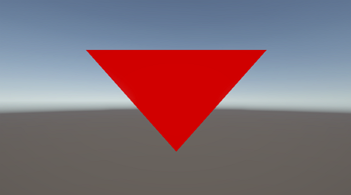

| computer shader로 파티클 그릴때, Graphics.DrawProcedural를 사용하고 있는데
대략 뭔지 알아 보겠습니다. Graphics.DrawProcedural는 Unity에서 CPU가 아닌 GPU에서 직접 버텍스를 생성해서 그리는 방식으로, 주로 커스텀 메쉬, 셰이더 기반 파티클, GPU 인스턴싱 등에 사용됩니다. 이 명령은 모바일에서 사용 가능하지만 몇 가지 제한 사항이 있습니다. Graphics.DrawProcedural 자체는 **모바일(iOS, Android)**에서도 호출이 가능합니다. 단, GPU가 지원하는 기능과 그래픽 API에 의존합니다.
제한 사항1. 셰이더 지원
3. DrawProcedural 타입
4. 성능 고려
5. WebGL은 지원되지 않습니다. 언제 Graphics.DrawProcedural을 쓰나?
화면 중앙에 빨간 화면을 그려 보겠습니다.  DrawProceduralExample.cs 파일 using UnityEngine;
public class DrawProceduralExample : MonoBehaviour { public Material material; void OnRenderObject() { if (material == null) return; material.SetPass(0); // 삼각형 1개 → vertex 3개 Graphics.DrawProceduralNow( MeshTopology.Triangles, 3); } } 핵심
OnRenderObject는 카메라가 씬의 모든 일반적인 오브젝트 렌더링을 끝낸 직후에 호출됩니다. 셰이더 파일은 unlit으로 생성 합니다. DrawProcedural.shader 파일 Shader "Unlit/DrawProceduralExample"
{ SubShader { Pass { CGPROGRAM #pragma vertex vert #pragma fragment frag struct v2f { float4 pos : SV_POSITION; }; v2f vert(uint vertexID : SV_VertexID) { v2f o; float2 positions[3]; positions[0] = float2(0.0, 0.5); positions[1] = float2(-0.5, -0.5); positions[2] = float2(0.5, -0.5); o.pos = float4(positions[vertexID], 0, 1); return o; } fixed4 frag(v2f i) : SV_Target { return fixed4(1, 0, 0, 1); // 빨간색 } ENDCG } } } 사용 방법
왜 Mesh 없이도 정점이 생기나?
|